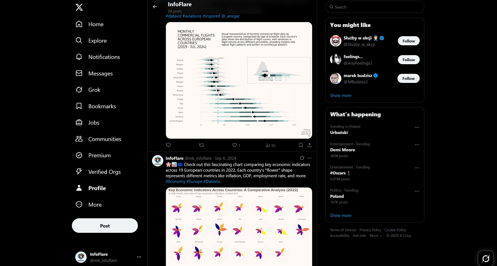
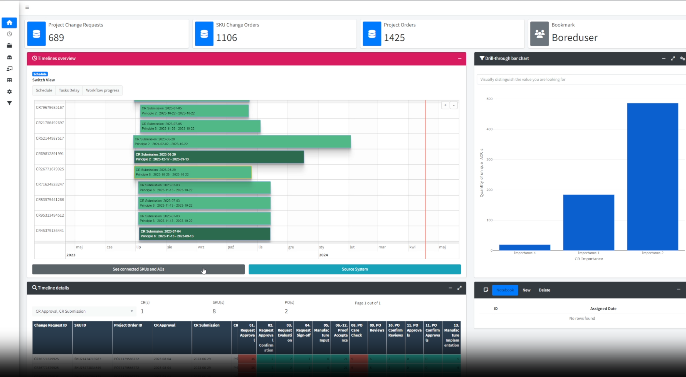
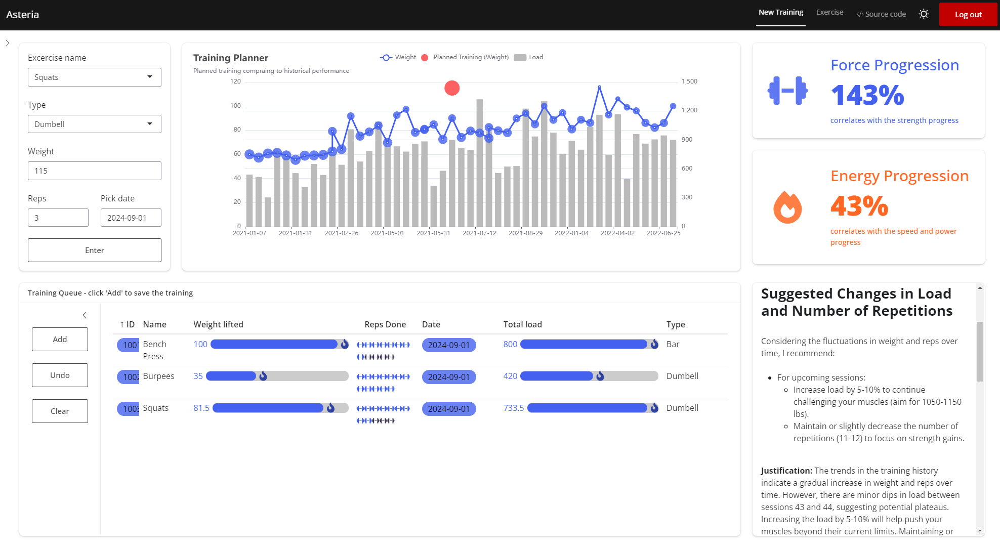
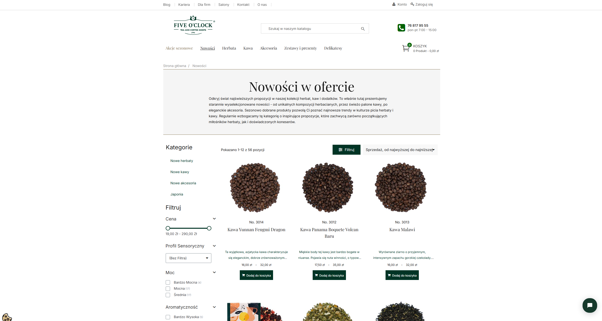
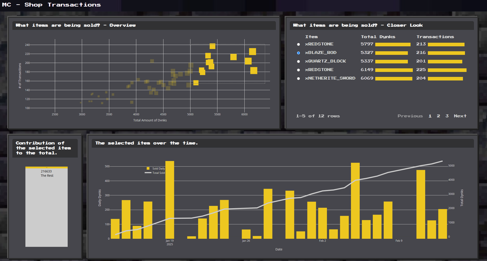
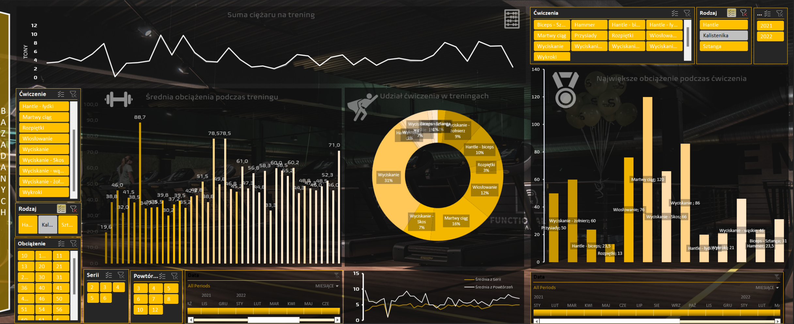

ABOUT ME
Hello, I'm Michał, as you might have already noticed :).
My journey into data analysis began during my studies, where I discovered the power of data-driven insights. With a natural inclination towards analytical thinking, I approach challenges with curiosity and a desire to understand the underlying patterns. My academic background has not only honed my technical abilities but also fostered my capacity to connect these insights with real-world applications. This balance between analysis and understanding the human element is what drives my work.
My aim is to continually improve and make a meaningful impact on the world. Feel free to explore my portfolio—I'm confident that together, we can create something great!
CAREER
-
Apr 2023 – Dec 2024
Novartis Data Analyst
WarsawData Analyst
• Collaborative member of an international operations team
• Specializing in reporting, analytical tool development, KPI design, and process optimization
• Supporting SAP system development
• Delivering actionable insights for informed decision-making
-
Jul 2022 – Mar 2023
Novartis Intern
WarsawData Analyst
• Intern in an international operations team
• Assisting supervisors with various tasks
• Preparing and automating reports
• Participating in Novartis internship projects
-
Aug 2020 - Jan 2022
Warehouse Employee – Logistics
Bielany WrocławskieEmployee at a logistics center
Logistics Center Employee specializing in: warehousing operations, process consolidation, and managing customer returns
EDUCATION & COURSES
-
Oct 2020 - Jan 2024
Wroclav University of Science and Technology
Management Engineering
IT Appliance in BusinessThesis: Development of a tool for interactive data visualization in R Shiny for monitoring the product labeling process at Medic company.
-
Feb 2022 - Jun 2022
DataCamp
Certified courses
Areas: R language, data analytics, shiny framework, machine learning
-
Sep 2017 - Jun 2020
Carolinum High School
Mathematics-Computer Science-Physics Profile

Hotel Location | Power BI
Discover the tourist value of any location with this Power BI app. It analyzes various factors such as attractions, accessibility, accommodation, and local amenities to provide an insightful score, businesses identify the most promising destinations.
See GitHub
InfoFlare | X Account
InfoFlare is a data-driven project dedicated to providing insights and visualizations centered on various topics. The project emphasizes transparency and clarity, making complex data accessible and understandable for a wide audience.
See X (Twitter)
Lucent | Shiny App.
The result of engineering work, the essence of which is the design of an analytical application allowing for the acquisition, transformation and presentation of data for supply chain employees.
See GitHub
Asteria | Shiny App.
"This app records and analyzes strength performance results using advanced LLM technology. It offers detailed insights and trends, helping users track progress, optimize training, and enhance their fitness journey with data-driven recommendations."
See RPubs
Time40 | Shiny Scraping App.
Time40 is an application that uses scraping to obtain data and then analyze it in a simple drill-through form. Are you thirsty? This app will help you to find the best tea (or coffee) to buy at fiveoclock.eu ;)
See GitHub
Trading Analysis | Shiny App.
This app analyzes economic offers from the Minecraft system, providing players with insights into item trade values, market trends, and pricing strategies. It helps optimize in-game economy decisions, making trading more efficient and profitable.
See RPubs
RPubs
Welcome to my RPubs account, your gateway to a curated collection of my reports and interactive documents. Explore insights on demography, electrification, football teams, weather, and more. Delve into a world of knowledge and discovery—all from a single platform!
See RPubs
Airlines | Shiny App.
Passanger's satisfaction dashboard. By selecting different dimensions, users can compare various passenger characteristics to assess their satisfaction with flights and explore the impact of individual factors. The algorithm also identifies similar passengers to one defined by user so that you can verify likelihood of such a passanger.
See GitHub